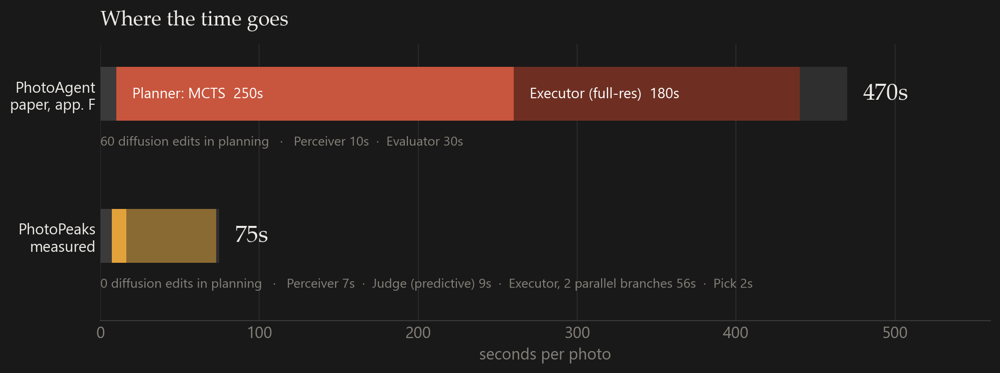
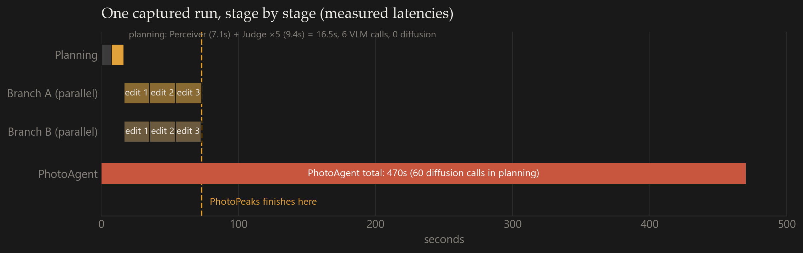
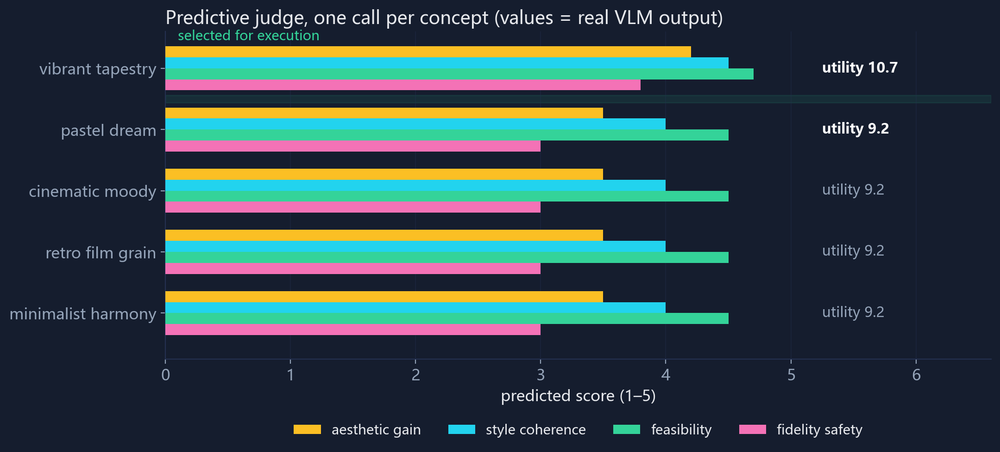
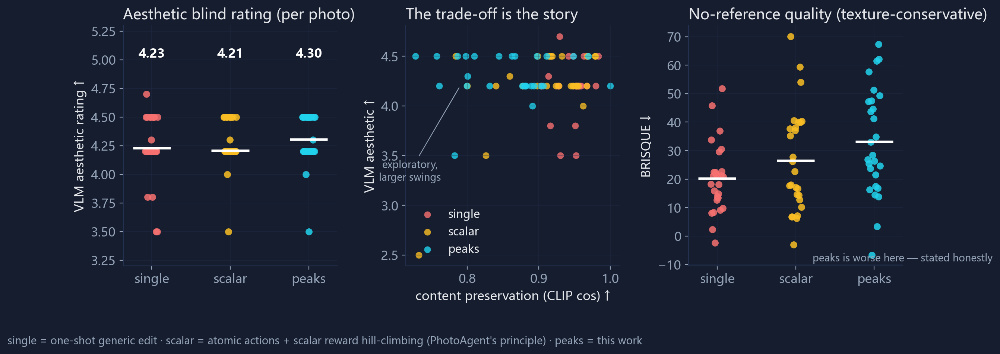
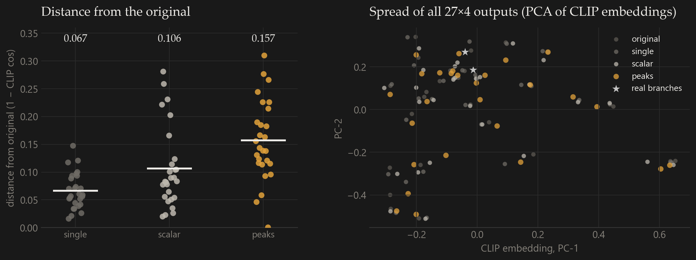

MOTIVATION · FIGURE 2 & 3
两个问题：太贵，而且把风格做没了


为什么打分会把风格做没：一张图的实验
打分是个加权和，还规定"分数不涨就回退"。但同一张照片往往有两种都成立的做法， 而它们的中间地带并不好看。把两个方向的结果做一次像素平均就能看到：


一张照片往往不止一种好法。PhotoPeaks 让模型先写下几个互不相同的风格方向，各自做完，最后挑一张； 而不是把所有编辑压到一个分数上取最大值。规划阶段一张图都不生成——模型只看原图，判断每个方向值不值得做。
PhotoAgent 把修图当成多步决策来做，方向是对的，但有两个硬伤：贵—— 规划时每试一个动作都要真的跑一次扩散模型，论文自己报了 470 秒一张； 窄——四种评估指标加权成一个分数再取最大，等于逼着所有编辑走同一条路， 风格被平均掉。
每个候选方向只让视觉模型看一眼原图，给出预测分，不再"跑一遍看看"。规划期生成图片数从约 60 张降到 0，规划耗时 250 秒降到 16.5 秒。
候选单位从"提亮/加饱和"这类动作，换成"胶片暖调""冷调极简"这类完整方向。两条分支各做各的，分数和参数都不互相混合。
终选可以判定"原图最好"；另有内容保持门禁，改动破坏画面时整条分支作废。
| 维度 | PhotoAgent | PhotoPeaks |
|---|---|---|
| 搜索单元 | 原子动作，可混合 | 完整风格概念，互斥 |
| 候选评估 | 真实执行扩散编辑 | VLM 预测打分 |
| 规划成本 | 250s · 60 次生成 | 16.5s · 0 次生成 |
| 目标形式 | 四指标加权标量 | 四维打分 + 比较式终选 |
| 接受策略 | 单调不降，否则回滚 | 分支保留 + 允许原图 |
| 安全机制 | 标量不降即接受 | 内容保持门禁 + 回滚 |
左侧数字出自其论文：成本见附录 F，主结果见 Table 1。
上半张图是四个模块、六条消息：各自传什么、花多少时间，都标在图上。 下半张图是搜索过程：五个候选方向各带一个预测分，只有前两名真正执行，两条分支互不干扰。


打分是个加权和，还规定"分数不涨就回退"。但同一张照片往往有两种都成立的做法， 而它们的中间地带并不好看。把两个方向的结果做一次像素平均就能看到：
让模型提出 3–5 个互不相同的风格方向（比如胶片暖调、冷调极简、戏剧化）。 像"提亮一点"和"再亮一点"这类同义方向会被要求重写；拍人的照片不许改动脸。
每个方向只让模型看一眼原图，给出预测分：值不值得做、会不会伤画面。 这一步不生成任何图片，也是成本能降下来的原因。
只做分数最高的两个方向，各自在自己的分支里执行，同时进行，互不交流—— 不混合分数，也不混合参数。中间地带就是这么被绕开的。
把原图和两条分支的成品放在一起比较，允许直接判"原图最好"。 另有内容保持检查：改动破坏了画面，整条分支作废。

照片是我自己拍的 27 张（人像、风光、城市、夜景、食物混着来）。三种做法跑同样的 API：
single 只发一句"把这张图修好"；scalar 拆成动作逐个打分选一个（PhotoAgent 的最小复现）；
peaks 是本文的完整流程。


| 策略 | 耗时/张 | VLM 调用 | 编辑调用 | 内容保持↑ | BRISQUE↓ | 美学盲评↑ |
|---|
完整流程（约束 + 细节融合）的输出，随机挑了六张。每张都可以左右拖动：左边是原图，右边是成品。


所有分支都被门禁否决，或者终选认为原图更好时，系统就交回原图。这在 PhotoAgent 的结构里不容易发生： 它只要分数涨一点点就会保留那次编辑。27 张对照里，peaks 多次把保守分支选为最终结果——少改和改对并不矛盾。
生成式编辑的特点是：你不约束它，它就会自由发挥。有四件事必须提前挡住。
指令里出现"氛围""层次"，它就可能真的去画前景、加光晕。 做法：每条指令带保持性要求，概念层面禁止"添加类"步骤，门禁用边缘结构相关性复核。 结构相关性 0.40 → 0.99（1.0 = 画面几何完全没动）。
"暖光""日落感"这类词很容易把整张图推向橙红，风景还好，脸就明显不对。 做法：概念阶段锁定肤色与身份，融合时只从原片取纹理、不碰颜色。 内容相似度 0.86 → 0.95，色度噪声 3.2 → 1.17。
编辑接口固定返回约 130 万像素，而原片是 2400 万像素，一步接一步重画还会继续掉细节。 做法：影调和颜色取编辑结果，纹理从原片高频补回。 分辨率保留 0.21 → 1.00，细节能量比 0.97。
全局相似度看的是"还是不是那张图"，局部多画几片叶子、脸偏一点色，它几乎不扣分。 做法：三个本地指标交叉检查（内容相似度、结构相关性、高频色度噪声），越界即整条分支作废。
要让它在真实产品里跑起来，有两件事必须发生，而且都不是工程问题，是模型问题。
扩散编辑模型不是必须的。在这套系统里它只是执行器——负责把"想法"落到像素上， 换成别的东西也不影响整个流程。而且论保真度，扩散本身是偏差的：伪色、模糊、鬼影是它的固有毛病， 靠提示词和门禁只能压制，压不掉。
有足量数据之后，正确的做法是训练一个专用调色模型：输入图像和风格向量，直接输出调色参数。 参数化的执行器天然可控——不重画，就没有伪色、模糊和鬼影，质量问题一次性解决。
"想方向"和"打分"现在靠通用模型撑着，审美判断偏平均、也偏保守。 用真人偏好数据微调之后，它才能判断"这张照片该往哪走、改到什么程度算好"。
这需要大量人类反馈（成对比较最省成本），所以放在第二阶段：先让执行器可控，再让它懂你。
工程上还有两件小事可以并行：按原分辨率分块编辑（瓦片 + 接缝融合），以及让评判模型在动手之前 就标出高风险步骤，而不是等生成完再拦。
这个项目之前，我做过一个 RAW 胶片模拟和色彩风格迁移系统（106 个可微参数 + 参考集上的风格能量模型）。 它的风格迁移版本失败的原因和这里一模一样：在风格空间里做平均，输出就会变灰、变脏。 我当时的修正是把参考集聚成 2–4 个"风格头"，每张图只路由到一个头，头之间轴差太大时干脆不许混合； 最后真正能用的形态是逐片种从光谱数据烘焙的 3D LUT——因为它是单峰，压根没有平均这回事。
所以在 PhotoAgent 里看到"加权成一个分数 + 分数不涨就回退"时，我认出的是同一个毛病的上一层版本： 上次在特征空间，这次在决策空间。加权和替代不了多峰，因为两个峰之间的插值不是"各得一半"，而是谷底。
photopeaks/
├── perceiver.py 概念生成（Qwen-VL，一次调用出 5 个概念）
├── judge.py 预测式评判 + 比较式终选
├── executor.py 编辑执行器（DashScope / OpenAI 兼容端点）
├── gates.py 本地 CLIP 门禁与质量度量
├── agent.py 主闭环（分支并行、计时与调用计数）
└── scripts/
├── run_benchmark.py 三策略对照（single / scalar / peaks）
├── make_figdata.py 图表数据（CLIP 嵌入、多样性、逐张指标）
├── make_figures.py 本文所有数据图表
└── make_arch_figure.py Figure 1 架构大图（SVG，含 CSS 动画）
图表都由 scripts/make_*.py 生成，架构大图是 make_arch_figure.py 画出的 SVG。
| 感知 / 评判模型 | Qwen-VL（DashScope 兼容端点） |
| 编辑模型 | qwen-image-edit，每次约 18–20 秒，输入 1280px 长边 |
| 门禁模型 | CLIP ViT-B/32，本地 CPU |
| 盲评做法 | 同一个 VLM 打分，不告诉它图是哪套流程出的 |
| 照片 | 27 张本人实拍，三套流程各跑一遍，共 81 次 |
| 主要超参 | 5 个候选方向 · 执行前 2 名 · 每个方向不超过 3 步 |
python -m scripts.run_benchmark --photos data/photos --out results/run1 python -m scripts.make_figdata && python -m scripts.make_figures python demo.py # 本地交互 demo